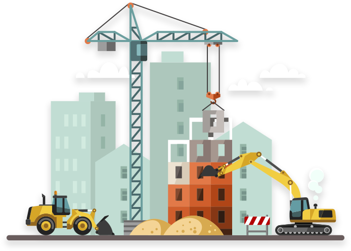
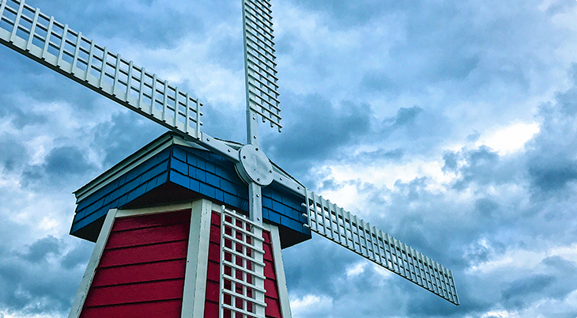

ONGOING PROJECTS

SMART HOMES
To believe in sustainable development and to shift sustainable energy has become imperative.
Our Services
A trusted infrastructure development partner delivering world class projects, ensuring quality, safety, sustainability, and accountability in everything we do.

Esteemed Projects
Over the past 25 years, SKYLINE BUILDERS is proud to have engineered some of the key infrastructure projects in Kerala

Building Construction
SKYLINE BUILDERS is the leading infrastructure and construction company in Kerala, India.
OUR CLIENTS
Always serve with honesty, integrity and transparency. Always, first understand your business needs and objectives.